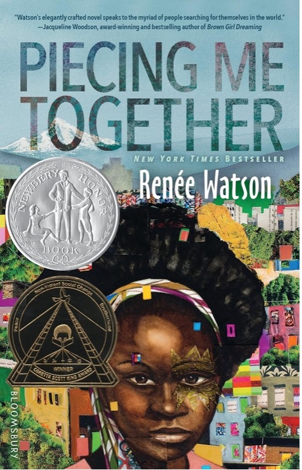

Piecing Me Together is a young adult novel by Renée Watson that covers Jade Butler's experience in junior year of high school. Jade's story is narrated in the form of often super-short chapters. Jade is a Black girl living in North Portland, and attends private school at St. Francis across the city on a scholarship. She joins Woman to Woman, a preparatory mentor program for Black girls, on the promise of a scholarship for college. Her low-income background, lack of friends at the school, and mom and her WtW mentor Maxine's advice steer her decisions and thought throughout the novel.
Jade is disappointed that she is not nominated for the study abroad program at her school. An otherwise excelling and smart student, she is especially good in Spanish, learning it throughout the book, and is an active Spanish tutor for other St. Francis students. She's also a collage artist and her friends and the adults find great talent in it.
A key theme of the book is racial and economic relations. She has to take the bus, and here she makes friends with white fellow St. Francis student Sam. There are several instances where Jade is decisively mistreated because of race, and Jade works through these experiences with Maxine, whereas Sam tends to brush them off. Jade is also poorer than the other students, much like Sam; and Jade doesn't find herself belonging with the rich bunch at St. Francis.
Jade's life in an overall untrusting and confusing situation motivates the experiences she narrates throughout the book.
Portland and its surroundings are the major metro area of Oregon, and often viewed as a haven for political progressivism. Notably, Oregon and Portland itself have a lower population of Black people than the national average of ~15%. Renée Watson draws from her lived experience as a Black woman raised in Portland to portray a Black girl's experience in adolescence and the school system. Portland's demographics deserve a story, and Piecing Me Together covers an inequality of race and economic backgrounds. Watson reads into this intersection with a Black girl navigating the city with her individual experiences of racism, class disparity and education, and yet not often explicitly thinking about the intersection of these herself.
Jade's experiences on the bus are common in the novel, where she sees riders, makes a friend on it from school, and generally needs to get everywhere with it independently. The bus rides represent a common thread of how she understands Portland and how to make her own decisions. Riding the bus also allows her to meet Samantha, a white girl that is relatable in some ways, like living far from the school, and of a lower class.
Jade's experience is grounded in a realistic scenario, and could be based on lived experience of Watson's in Portland. When Samantha and Jade go shopping, Jade's only white friend Sam comes off as being understanding only to a limit. Jade and Sam go shopping together, and Jade simply looks around. Jade gets stopped for bringing a backpack while other shoppers visibly have one. When sharing this to Samantha, she reads it the situation as neutral. Samantha doesn't immediately validate Jade, her friend, and refers back to the rules and etiquette of the store. Jade gets reasonably frustrated having to explain herself: "I don't know what's worse. Being mistreated because of the color of your skin, your size, or having to prove that it really happened" (137). Watson's example of normalized racism portrayed in the book, viewing a Black kid with no money as vulnerable to stealing and/or expected to follow heightened rules, challenges the progressive view of Portland. It does so in affirming that Portland is still an American city; ordinary people can and do still treat Black people and poor people unequally.
Jane later catches a casual representation of stereotypes against poor demographics in Portland from Maxine at Maxine's apartment. On page 130, Maxine defends Jade's morality to Maxine's friend Kira, saying, "I'm going to see it she doesn't end up like one of those girls", and Jade thinks, "I know when Maxine says those girls, she is talking about the girls that go to Northside." In this exchange, Jade is first socially smart to know that Maxine is downtalking Jade's home area, and best friend Lee Lee's school. People around Portland, young or old, Black or white, poor or rich, have conceptions of different areas of the big city. Jade also is emotionally intelligent to now observe Maxine's perception of Jade as a "girl who needs saving" (130). It's now up to a 16-year-old kid like Jade to catch on to her mentor judging both living in a certain area in Portland and the area's poverty and culture within it.
Renée Watson is an author from Portland, Oregon. Her background in education and activism has informed her young adult novels.
She has received many awards for her young adult and children's literature publications, such as the John Newbery Medal, Coretta Scott King Award, Newbery Honor, Coretta Scott King Honor, Walter Dean Myers Award, and Amazon Best Book of the Year. She currently serves as a member of the Education Advisory Council for the Academy of American Poets. A significant aspect of her career includes intertwining her love for writing with her love for giving back to her community, both in Portland and all across the world. Watson takes it upon herself to be a voice of inclusivity, creating children's literature that prioritizes intersectionality and representation for young Black and brown girls.
Beyond Oregon, she has conducted poetry workshops in New Orleans. She has also launched two projects, the Renée Watson Cottage and i, too arts collective, advocating for classic Black poets and writers. The Cottage is in Pennsylvania, and the i, too, commemorates Langston Hughes in Harlem.
Written by Ian and Kylie
Peter Brown Hoffmeister, This Is the Part Where You Laugh (2016)
– a Eugene YA story with relatable protagonist Travis.
Bethany C. Morrow, A Song Below Water (2020)
– another Portland YA with girl and best friend
